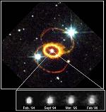

El universo antiguo
d) La edad de los elementos químicos

Supernova 1987A
Justo después del Big Bang, el Universo estaba compuesto casi enteramente de los elementos más simples: hidrógeno y helio. Nosotros hemos confirmado esto viendo las galaxias que están realmente lejos y por tanto más viejas. Y, ciertamente, éstas tienen proporciones mayores de hidrógeno y helio. Los otros elementos químicos se formaron más tarde, algunos en reacciones nucleares en los centros de las estrellas, otros cuando las estrellas más masivas terminaron su vida en explosiones inmensas que los astrónomos llaman una Supernova. (Una espectacular supernova fue observada en 1987 en una galaxia muy cercana a nosotros. Los astrónomos realmente observaron algunos de los elementos recién formados emergiendo en esta explosión).
Algunos isótopos (formas de algún elemento con diferentes números de neutrones en sus núcleos) de estos elementos son radioactivos, se convierten en otros isótopos a un ritmo que puede ser exactamente medido en el laboratorio. A medida avanza el tiempo, queda cada vez menos del isótopo original o “padre” y puede encontrarse más y más del isótopo producido o “hijo” por todas partes. Comparando la cantidad del isótopo padre con la del isótopo hijo, los astrónomos pueden determinar cuánto tiempo ha pasado desde que el isótopo padre radioactivo se formó. De esta manera, los astrónomos han determinado que, a pesar de que algunos isótopos radioactivos (tales como los producidos por la supernova de 1987) se han formado recientemente, los isótopos radiactivos más viejos en el Universo tienen de 10 a 20 miles de millones de años de antigüedad.
La misma técnica de datación radiactiva, nos permite medir las edades de los rocas más antiguas en la Tierra, en la Luna, y en los meteoritos, pedazos de roca provenientes del espacio que han caído a la Tierra. Tales experimentos de datación han mostrado que la edad del Sistema Solar (el Sol y sus planetas) es de casi 4.5 miles de millones de años, como mencionamos más arriba. El Universo es mucho más antiguo que nuestro pequeño vecindario. Más recientemente, la misma técnica ha sido usada para confirmar las edades de las estrellas.
El punto que hay que recalcar, es que todos los estimados de la edad del Universo hechos por separado, están en un consenso admirable –nuestro mejor estimado es de casi 14 mil millones de años, con un margen de error del 10 por ciento. Esto fortalece la opinión de los astrónomos de que el Universo, las galaxias y las estrellas, son realmente antiguas y no de formación reciente. Hay otras maneras menos directas de estimar las edades de estos objetos y la edad del Sistema Solar, y éstas también están en consenso.
Volver a la sección Ciencias de los orígenes
Comentarios
Comments powered by Disqus